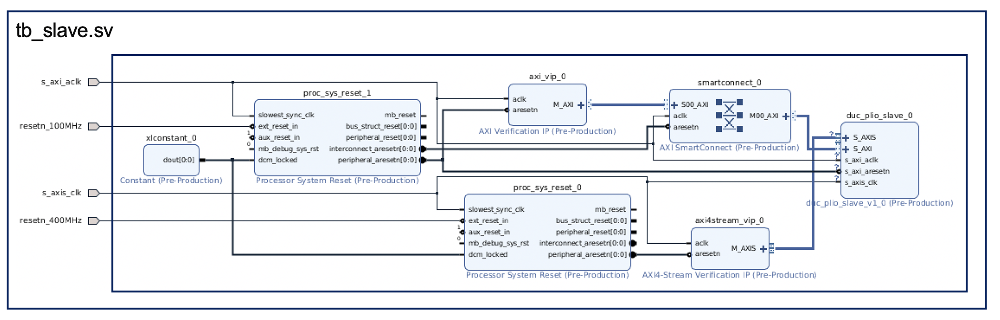

© Copyright 2021 Xilinx, Inc.
Licensed under the Apache License, Version 2.0 (the “License”); you may not use this file except in compliance with the License. You may obtain a copy of the License at
http://www.apache.org/licenses/LICENSE-2.0
Unless required by applicable law or agreed to in writing, software distributed under the License is distributed on an “AS IS” BASIS, WITHOUT WARRANTIES OR CONDITIONS OF ANY KIND, either express or implied. See the License for the specific language governing permissions and limitations under the License.
This simulation design builds on the IP that was generated by using the Makefile in the parent directory, i.e. dlbf_slave. The design is built using the following blocks:
AXI4 LITE VIP
AXI4 Stream Master VIP
Reset blocks
dlbf_slave IP
